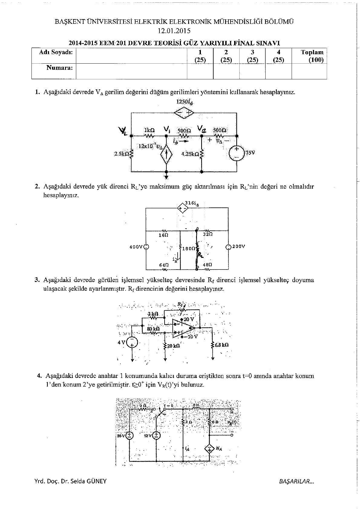
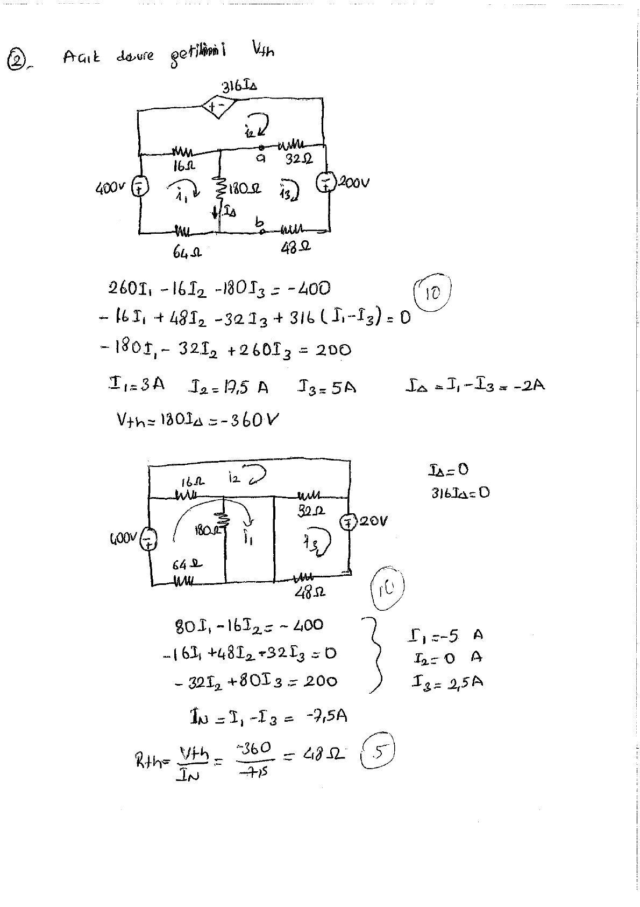
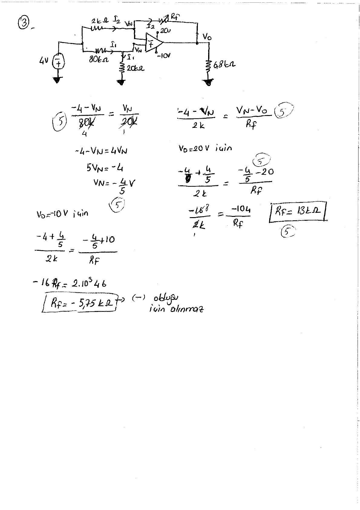
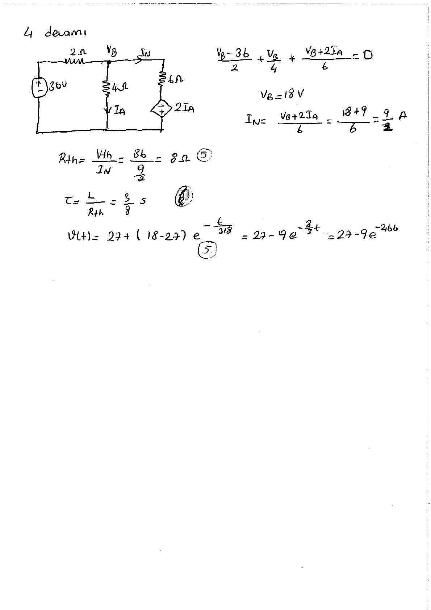

· EEM201
EEM201 Circuit Theory I: January 12, 2015 Final Exam and Handwritten Solutions
EEM201 – Devre Teorisi I · 12.01.2015 · 18.10.2026
This is the 2014–2015 fall final exam of the Başkent University course EEM201 Circuit Theory I, dated January 12, 2015. The exam paper carries the name of Asst. Prof. Dr. Selda Güney. The six-page scanned PDF, found in the EEM202 folder, contains four questions along with handwritten solutions. The question texts and the main calculations are given below; the PDF can be downloaded at the end of the post.
Exam questions
Each question is worth 25 points.
- In the given circuit, calculate the voltage VΔ using the node-voltage method.
- Calculate the value of R_L for maximum power transfer to the load resistor.
- For what value of the resistor R_f does the op-amp reach saturation in the operational amplifier circuit? Find the output voltage at that moment.
- After the switch reaches steady state in position 1, it is moved to position 2 at t = 0. Find v(t) for t ≥ 0.

Question 1: Node voltages
In the solution, the control voltage of the dependent source is taken as VΔ = V₂ − 75. After rearranging, the node equations are:
- 16.5V₂ − 5.5V₁ = 825
- 180V₂ − 85V₁ = 6375
From this system, V₁ = 105 V and V₂ = 85 V are obtained, and therefore VΔ = 10 V.
Question 2: Maximum power
With the load removed, the mesh currents are calculated:
- 260I₁ − 16I₂ − 180I₃ = −400
- −16I₁ + 48I₂ − 32I₃ + 316(I₁ − I₃) = 0
- −180I₁ − 32I₂ + 260I₃ = 200
Solution: I₁ = 3 A, I₂ = 17.5 A, and I₃ = 5 A. Since IΔ = I₁ − I₃ = −2 A, V_Th = 180IΔ = −360 V.
In the short-circuit calculation, I_N = −7.5 A. Thus R_Th = V_Th/I_N = 48 Ω, and for maximum power R_L = 48 Ω.
Note: Substituting I₁ = 3, I₂ = 17.5, I₃ = 5 into the equations satisfies all three equalities; −360/(−7.5) = 48 Ω.

Question 3: Op-amp saturation
For the node at the positive input, (−4 − V_N)/80k = V_N/20k; hence V_N = −4/5 V.
The KCL at the inverting input relates R_f to the output voltage. The resistance found for the output to reach the positive supply limit of +20 V is negative; this situation cannot occur with a physical positive resistance. For the negative supply limit V_o = −10 V, R_f = 13 kΩ is obtained.

Question 4: RL transient
With the switch in position 1 at steady state, the inductor acts as a short circuit:
- I_A = 12/4 = 3 A
- 12 = 6i_L(0⁻) − 2I_A ⇒ i_L(0⁻) = 3 A
- i_L(0⁺) = 3 A, v(0⁺) = 3·6 = 18 V.
With the switch in position 2 at steady state, the node voltage is V_B = 18 V and the control current is 4.5 A. The final voltage across the resistor is v(∞) = 27 V.
For the equivalent seen by the inductor, V_Th = 36 V, I_N = 9/2 A, and R_Th = 8 Ω are found. Since L = 3 H, τ = 3/8 s.
v(t) = 27 + (18 − 27)e^(−t/(3/8)) = 27 − 9e^(−8t/3) V, t ≥ 0.
Note: The approximate exponent in the last line of the source is of the form −2.66t. When written with the exact fraction −8t/3, the initial and final values are verified as 18 V and 27 V, respectively.
